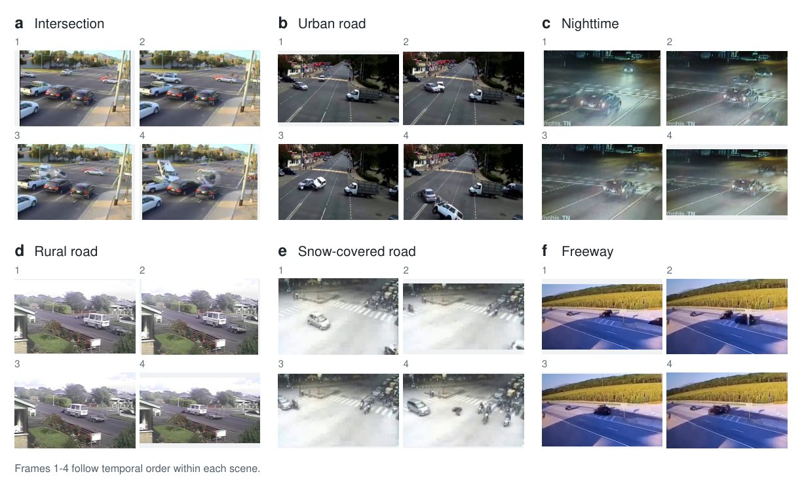
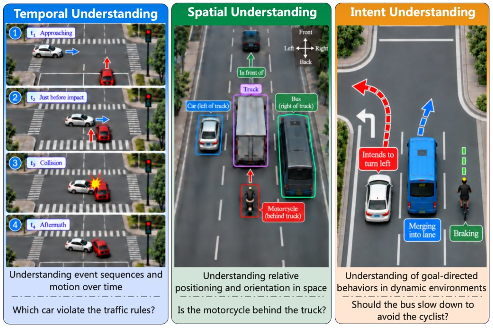

AI systems have demonstrated remarkable capabilities in mathematical reasoning, programming and the game of Go. Whether current multimodal models can match human understanding of dynamic physical events remains unclear. Here we show that leading multimodal models fall short of human performance in interpreting real-world traffic accidents. We develop AccidentBench, comprising 1,628 videos and 5,766 human-annotated questions spanning temporal, spatial and intent reasoning. Three nested answer levels vary the required precision while keeping each video and question fixed. On a shared 600-question evaluation set at the finest resolution, the strongest evaluated model achieves 42.05% accuracy, compared with a mean of 56.11% across three independent human evaluators. Even on the 188 questions answered correctly by all three evaluators, the best-performing model fails in approximately one third of cases. Model accuracy declines as answer precision increases, including after correction for differences in chance performance. A video-free control shows above-chance accuracy in frontier models, consistent with possible prior exposure to benchmark content during training. These findings reveal human–AI gaps in interpreting safety-critical traffic scenes and highlight the need to assess whether model predictions reflect the temporal, spatial and behavioural evidence required by a question. These results further suggest that precise understanding and reasoning about dynamic physical events remain a key bottleneck in advancing multimodal AI towards human-level performance.
AccidentBench is a human-centered benchmark built on real-world traffic accident videos drawn from published academic datasets. The videos span intersections, highways, freeways, rural and urban roads, tunnels, bridges and parking lots; snow, rain, fog and night-time conditions; and road users including cars, trucks, buses, motorcycles, bicycles and pedestrians, seen from both ego-centric and third-person viewpoints. Every question and reference answer is written by human annotators — none are generated by language models.

Representative traffic accident scenes. (a) Intersection, (b) urban road, (c) nighttime, (d) rural road, (e) snow-covered road, (f) freeway. Each panel shows four frames from one video in temporal order.

Three reasoning types. Temporal reasoning evaluates event sequences and motion over time; spatial reasoning evaluates relative positions and orientations among traffic participants; intent reasoning evaluates goal-directed behaviour and decision-making in dynamic scenes.
Each question is posed at three levels of required precision while the video and question stay fixed — only the answer space is refined. For quantitative questions (counting, ordering, most intent tasks) the three levels quantize the same underlying integer: Coarse uses three width-4 intervals (e.g. [0, 3], [4, 7], [8, 11]), Fine uses six width-2 intervals, and Exact requires the precise integer from 0 to 11. For spatial questions, Coarse asks for a lateral relation (left/right), Fine adds an explicit uncertainty option, and Exact requires resolving both axes, {front, back} × {left, right}. Because the answer spaces are nested, every Exact answer maps to a Fine and a Coarse answer, so we can measure both how accuracy changes with precision and whether a model's answers stay mutually consistent.
Since the three resolutions have different chance rates, we report chance-corrected accuracy ac = 100 (a − c) / (100 − c) alongside raw accuracy a, where c is the uniform-guessing rate on the evaluated items. ac = 0 is chance and 100 is perfect.
Human reference. Dataset construction and human evaluation were performed by separate groups: four annotators wrote the questions and reference answers, two reviewers ran quality checks, and three independent evaluators answered a 600-question Exact-resolution evaluation set without seeing the reference answers. All participants are licensed drivers.
On the shared 600-question Exact-resolution set, the three independent evaluators score 58.00%, 58.33% and 52.00% (mean 56.11%). The best model, GPT-5.6-terra, reaches 42.05% — a gap of 14.06 percentage points. Every individual evaluator beats every model, so the advantage does not depend on majority voting.
On the 188 questions that all three evaluators answer correctly, the strongest model still fails on roughly one third (65.43% accuracy). Model errors are not confined to questions that are ambiguous or hard for everyone.
GPT-5.6-terra falls from 61.67% (Coarse) to 41.67% (Exact); chance-corrected scores fall from 38.4 to 29.7. Gemini 3.6 Flash falls from 45.9 to 29.3 and Claude Sonnet 5 from 32.4 to 12.8. Identifying a broad answer category does not ensure a precise answer for the same video and question.
Given only questions and options, GPT-5.4 reaches 24.44% at Exact resolution versus a 17.07% chance rate — consistent with possible prior exposure to benchmark content (an earlier version of the dataset was released in May 2025). Even with video, its Exact accuracy is only 31.28%.
From short to long videos, GPT-5.6-terra drops from 60.67% to 36.44% and Gemini 3.6 Flash from 62.55% to 32.67%; human majority accuracy drops from 76.31% to 51.78% but stays above every model in every length group.
Exact-resolution accuracy (%) on the 600-question set answered by all three independent human evaluators.
| Subset | Metric | n | Chance | Claude Sonnet 5 | Gemini 3.6 Flash | GPT-5.6-terra | Human 1 | Human 2 | Human 3 | Human Mean |
|---|---|---|---|---|---|---|---|---|---|---|
| All items | Acc. (%) | 600 | 16.91 | 27.18 | 41.71 | 42.05 | 58.00 | 58.33 | 52.00 | 56.11 |
| ac | 600 | 0.00 | 12.36 | 29.85 | 30.26 | 49.45 | 49.85 | 42.23 | 47.18 | |
| All 3 humans correct | Acc. (%) | 188 | 19.27 | 38.83 | 63.30 | 65.43 | 100.00 | 100.00 | 100.00 | 100.00 |
| ac | 188 | 0.00 | 24.23 | 54.54 | 57.18 | 100.00 | 100.00 | 100.00 | 100.00 |
The 188-question subset is selected by human correctness, so it does not give an unbiased estimate of the overall gap; it does establish that model errors persist on questions that all three independent evaluators resolve correctly.
Accuracy (%) and chance-corrected accuracy ac across Exact, Fine and Coarse answer resolutions, sorted by Exact accuracy. Cell shading runs from lowest (red) to highest (green) within each column across models. Human evaluators answer Exact-resolution questions directly; their Fine and Coarse scores are obtained by projecting Exact responses through the nested answer space.
| Model | Size | Exact | Fine | Coarse | |||
|---|---|---|---|---|---|---|---|
| Acc. | ac | Acc. | ac | Acc. | ac | ||
| 👥 Human, majority of three | - | 57.67 | +49.0 | 66.83 | +56.9 | 76.83 | +62.8 |
| GPT-5.6-terra (reasoning=high) 🥇 | - | 41.67 | +29.7 | 51.33 | +36.8 | 61.67 | +38.4 |
| Gemini 3.6 Flash 🥈 | - | 41.37 | +29.3 | 50.43 | +35.6 | 66.32 | +45.9 |
| GPT 5 🥉 | - | 37.33 | +24.5 | 48.34 | +32.4 | 54.86 | +26.6 |
| Gemini 2.5 Pro | - | 29.76 | +15.4 | 36.46 | +16.8 | 54.56 | +26.1 |
| Claude 3.5 | - | 28.71 | +14.1 | 35.35 | +15.4 | 48.59 | +16.4 |
| Gemini 2.5 Flash (thinking) | - | 28.67 | +14.1 | 37.52 | +18.2 | 50.00 | +18.7 |
| Claude Sonnet 5 | - | 27.69 | +12.8 | 38.29 | +19.8 | 57.95 | +32.4 |
| GPT 4o | - | 24.41 | +8.9 | 36.99 | +17.5 | 45.92 | +12.1 |
| Gemini 2.5 Flash (no thinking) | - | 24.34 | +8.8 | 36.70 | +17.2 | 51.40 | +21.0 |
| InternVL2.5 | 26B | 23.78 | +8.2 | 35.11 | +15.1 | 52.55 | +22.9 |
| InternVL3 | 8B | 23.55 | +7.9 | 33.78 | +13.3 | 49.55 | +18.0 |
| Qwen3 VL | 8B | 22.89 | +7.1 | 32.45 | +11.6 | 47.67 | +14.9 |
| Qwen2.5 VL | 7B | 22.89 | +7.1 | 29.89 | +8.2 | 40.67 | +3.5 |
| InternVL2.5 | 8B | 22.67 | +6.8 | 34.66 | +14.5 | 50.11 | +18.9 |
| Qwen2.5 VL | 32B | 22.66 | +6.8 | 28.55 | +6.5 | 43.22 | +7.7 |
| LLaVA Video | 7B | 19.78 | +3.3 | 25.67 | +2.7 | 31.44 | −11.5 |
| InternVL2.5 | 4B | 19.56 | +3.1 | 33.89 | +13.5 | 44.89 | +10.4 |
| Gemini 1.5 Pro | - | 18.76 | +2.1 | 33.89 | +13.5 | 46.00 | +12.2 |
| LLaVA Next | 32B | 16.22 | −0.9 | 20.00 | −4.7 | 31.25 | −11.8 |
| LLaVA OneVision | 7B | 13.67 | −4.0 | 16.67 | −9.1 | 29.78 | −14.2 |
| Uniform chance | - | 17.07 | 0.0 | 23.02 | 0.0 | 37.75 | 0.0 |
GPT-5.6-terra, Gemini 3.6 Flash and Claude Sonnet 5 are evaluated with a standardized visual input budget (16 frames). Nested consistency — whether a model's Exact, Fine and Coarse answers are mutually compatible — ranges from 49.5% to 63.3% across evaluated models, showing structured cross-resolution behaviour even when answers are wrong.
| Input condition | Coarse | Fine | Exact |
|---|---|---|---|
| Uniform random guessing | 37.75 | 23.02 | 17.07 |
| Question + options | 52.31 | 32.82 | 24.44 |
| Question + options + video | 55.21 | 44.62 | 31.28 |
Without any video frames GPT-5.4 is above chance at every resolution. Adding video raises accuracy by only 2.90, 11.80 and 6.84 points, and Exact accuracy stays below one third.
| Model | Short | Medium | Long | |||
|---|---|---|---|---|---|---|
| Acc. | ac | Acc. | ac | Acc. | ac | |
| Human (majority) | 76.31 | +68.0 | 64.00 | +50.8 | 51.78 | +35.7 |
| GPT-5.6-terra | 60.67 | +46.9 | 48.44 | +29.6 | 36.44 | +15.3 |
| Gemini 3.6 Flash | 62.55 | +49.4 | 53.09 | +35.9 | 32.67 | +10.2 |
| Claude Sonnet 5 | 48.22 | +30.0 | 38.27 | +15.7 | 30.22 | +7.0 |
| Uniform chance | 26.00 | 0.0 | 26.80 | 0.0 | 25.00 | 0.0 |
Scores pool the three answer resolutions; models use the same 16-frame budget across lengths.
| Dataset | Safety | Traffic | Annotation | Real-world | Main scenario | # Videos | Avg. dur. (s) | # QA | Format |
|---|---|---|---|---|---|---|---|---|---|
| MMWorld | ✗ | ✗ | Human | ✓ | General | 1,910 | 107 | 6,627 | Multiple-choice |
| MVBench | ✗ | ✗ | Human & LLM | ✓ | General | 4,000 | 16 | 4,000 | Multiple-choice |
| LongVideoBench | ✗ | ✗ | Human | ✓ | General | 3,763 | 473 | 6,678 | Multiple-choice |
| DriveBench | ✓ | ✓ | Human & LLM | ✓ | General driving | ✗ | ✗ | 19,200 | Multiple-choice |
| DriveLM | ✓ | ✓ | Human | ✓ | General driving | ✗ | ✗ | 15,480 | Open-ended |
| nuScenes-QA | ✗ | ✓ | Human | ✓ | General driving | ✗ | ✗ | 83,337 | Open-ended |
| RoadSocial | ✓ | ✓ | LLM | ✓ | General driving | 13.2k | 35.6 | 260k | Open-ended |
| EchoTraffic | ✓ | ✓ | LLM | ✓ | General driving | 29,865 | 3.76 | 149,325 | Open-ended |
| AVD2 | ✓ | ✓ | LLM | ✗ | General driving | 8,399 | 63 | - | Open-ended |
| AccidentBench (ours) | ✓ | ✓ | Human | ✓ | Traffic accident | 1,628 | 50.7 (median 5.0) | 17,069 | Multiple-choice |
AccidentBench is not the largest traffic-video benchmark. Its contribution is a different set of design choices: an exclusive focus on safety-critical accident scenes, fully human-authored questions and answers, verifiable multiple-choice formats, and a nested answer-resolution design for controlled analysis of answer precision.
Data & code. Benchmark annotations, instructions for accessing the source data, and evaluation code (built on lmms-eval) are linked above. Source videos come from published academic datasets (Bao et al., 2020; Shah et al., 2018) and remain subject to the access and licensing conditions of those datasets. The data are intended for academic evaluation only.
@misc{gu2026accidentbench,
title = {Human--AI Gaps in Understanding Safety-Critical Traffic Scenes},
author = {Gu, Shangding and Wang, Xiaohan and Ying, Donghao and Zhao, Haoyu and Yang, Runing and
Li, Boyi and Liu, Xianyang and Liu, Qin and Liu, Sheng and Jin, Ming and Yeung, Serena and
Chen, Muhao and Zhang, Weinan and Hu, Xia and Wang, Jun and Pavone, Marco and
Spanos, Costas and Song, Dawn},
year = {2026},
note = {Under review},
url = {http://accident-bench.site}
}